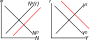

Here we see graphs summarizing the markets in the first period.
The market for labor is on the left, and for goods and assets is on the right:
Labor Demand is chosen to satisfy \(w=MP_N\). An increase in \(z\) increases the marginal productivity of labor, and so leads to the firm demanding higher amounts of labor for each real wage, shifting the labor demand curve outward.
This shift causes the labor market to supply more labor at the original market clearing interest rate. The increase in labor and the increase in \(z\) both lead to more output at each given interest rate. The Output supply curve is determined by the relationship between \(r\) and the ouput produced by the labor market, and so then shifts outwards.
Finally, a higher interest rate shifts the labor supply curve as a result of changing the consumer's wealth.
The initial effects on labor demand and thus output supply are similar to what happens when we increase \(z\).
However, the increase in initial capital stock also leads to less investment (because less investment is need to get the desired level of \(K^\prime\)), causing the output demand, determined by \(C+I+G\), to shift as well.
Note that invesment is chosen according to the equation \(r=MP_{K^\prime}-\delta\), and a change in \(z^\prime\) changes the marginal product of second-period capital. Thus the increase in \(z^\prime\) increases investment demand, and so shifts the output demand outward.
On the other hand, a change in total factor productivity tomorrow doesn't affect the labor demand today, and as such doesn't cause the shifts in output supply.
Finally, the decrease in \(r\) shifts the labor supply curve.

With both changes occuring, the change in interest rate becomes ambigous. The labor supply will shift in response to the change in \(r\), but without specifying the details, we can't say in which direction.
To fund this increase in government expenditures decreases the consumer's wealth, reducing the amount of leisure chosen by the consumer, and increasing the labor supplied.
This shift in labor demand in turn shifts the output supply.
At the same time, the increase in \(G\) directly increase output demand, shifting it outward.
This changes the equilibrium in the goods market, and in the abstract could decrease or increase equilibrium interest rate. However, for reasons discussed in the book, the shift in output demand will typically be much larger, resulting in an increase in the interest rate, and a second shift outwards in the labor supply.
Given exogenous policy \(\left\{ G, G^\prime, \tau, \tau^\prime\right\}_{t=0}^\infty\), exogenous parameters \((z, z^\prime, \delta )\), exogenous endowments of time \(h,h^\prime\) and initial stock of capital \(K\), a competitive equilibrium in this economy consists of the following endogenous variables: